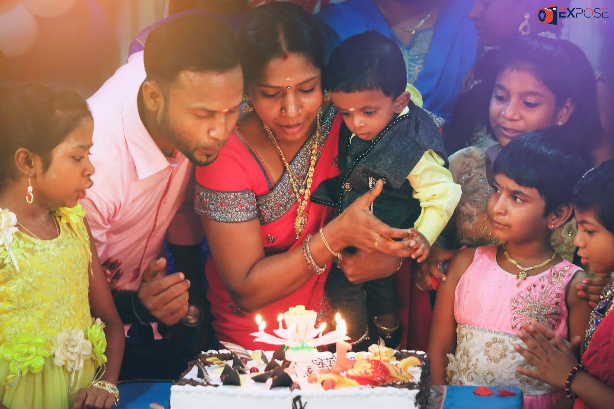
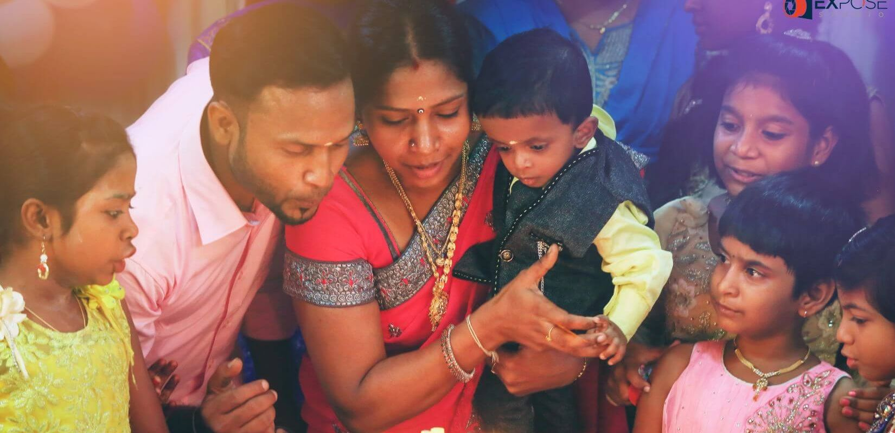

orginal image resolution | 5586*3724 size | 11.7 MB |Impossible to load

resolution down | 1650*1100 size | 237kb |common resizing, here there is nothing to lose in picture quality. It should be done and there is no other way
lossless compression | 1650*1100 size | 162kb |
cropped 300px at bottom to fit to the desktop | 1650*800 size | 162kb |Impossible to load
.webp format